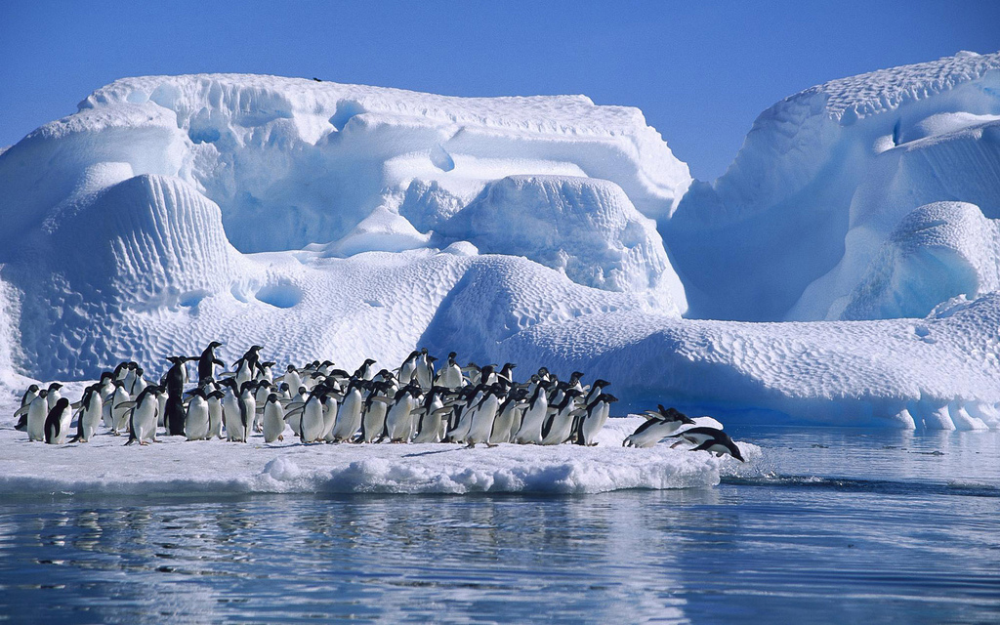

The top map displays in road map view where antarctica is.
The second map shows in satellite view and shows where penguins are located on the left most point.
Antarctica is a place in the southern hemisphere and is home to many animals although it may not look like it. There are animals such as penguins, polar bears, whales, foxes, etc. The iceburgs in antarctica hold lots of life and could be a great place to put a hotel. This is where I would like to stay for my "Dream Vacation".